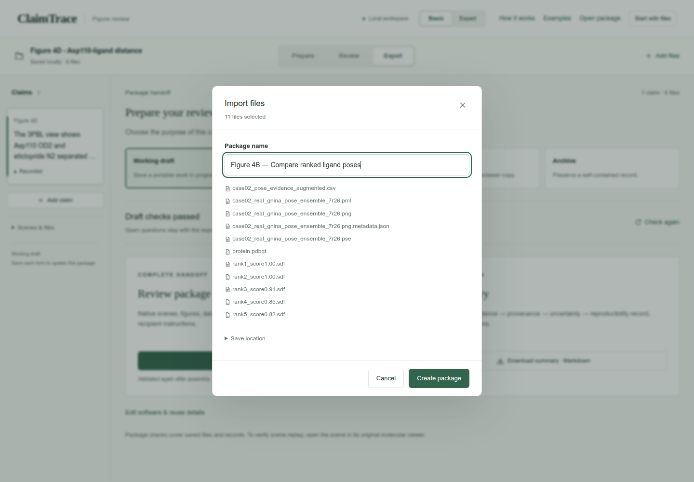
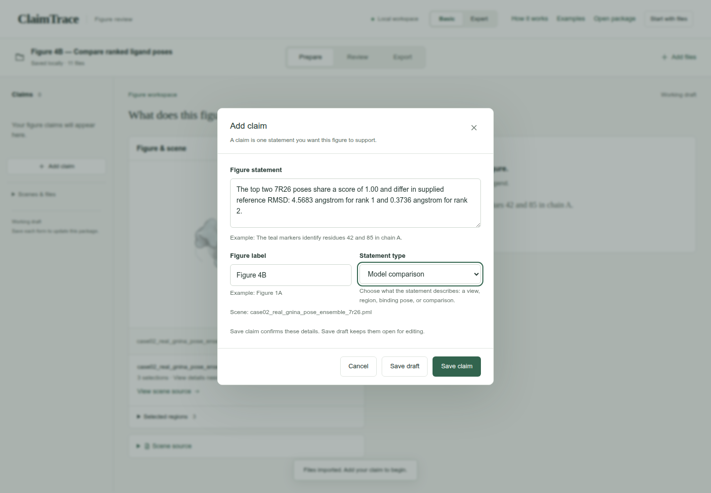
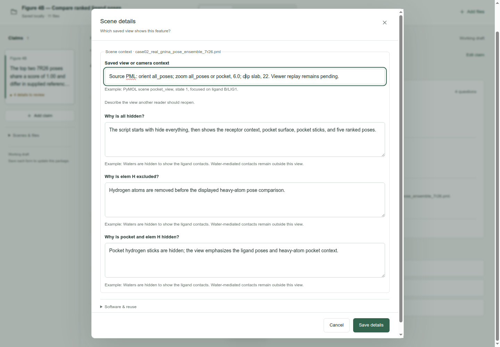
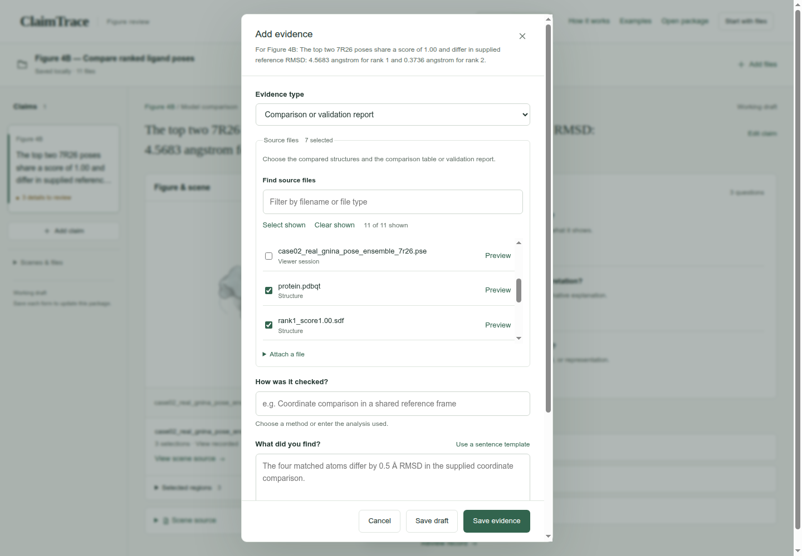
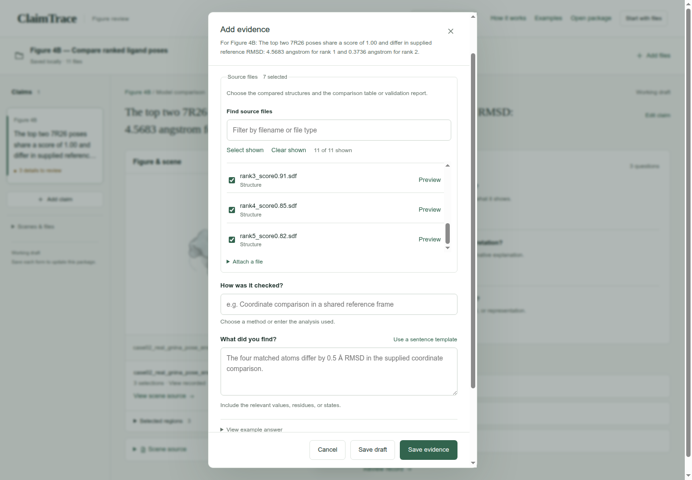
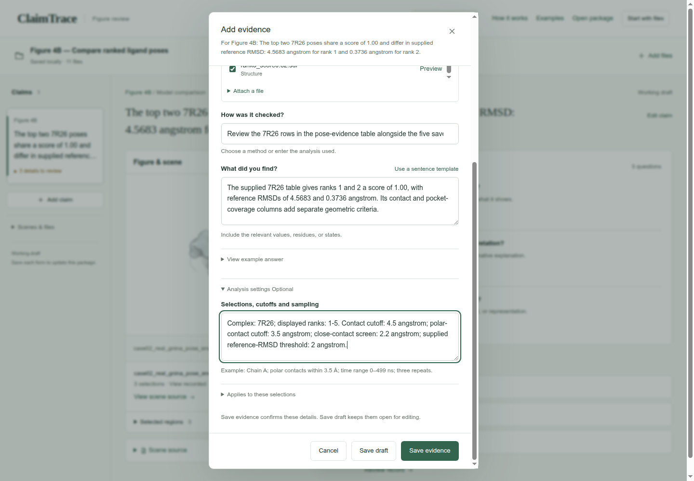
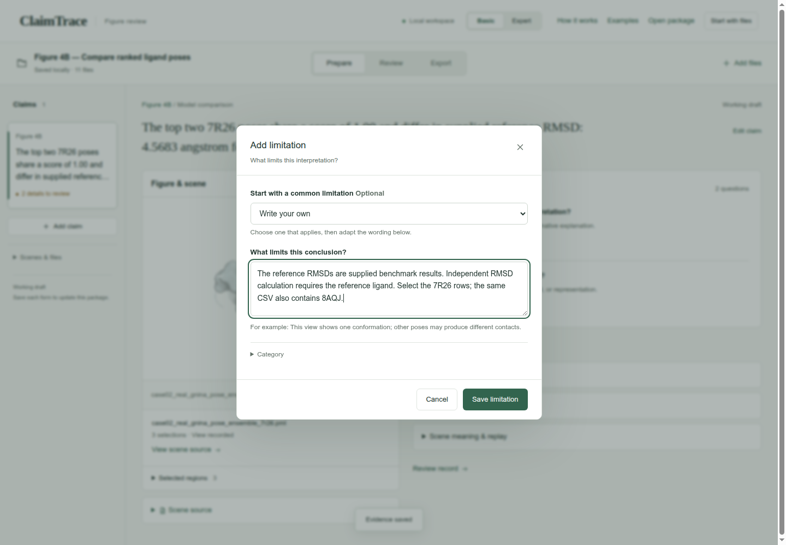
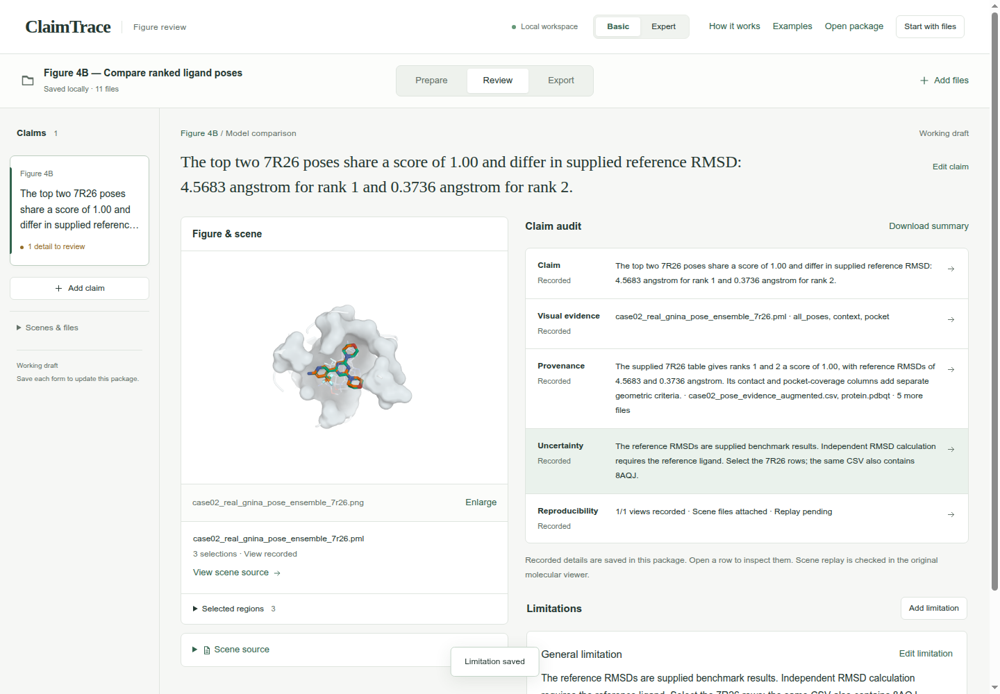
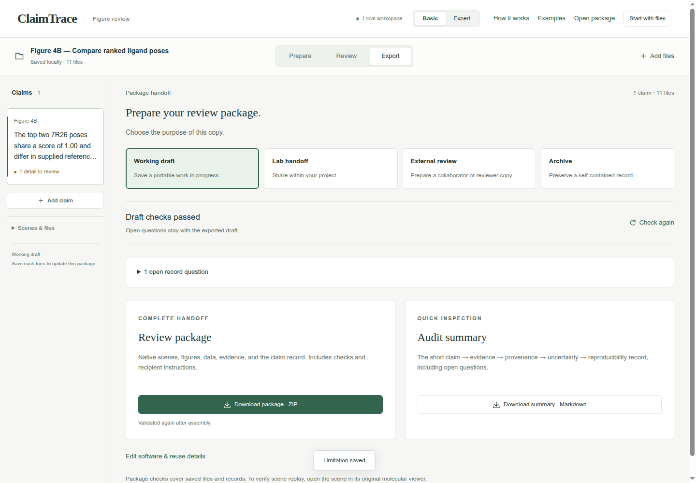
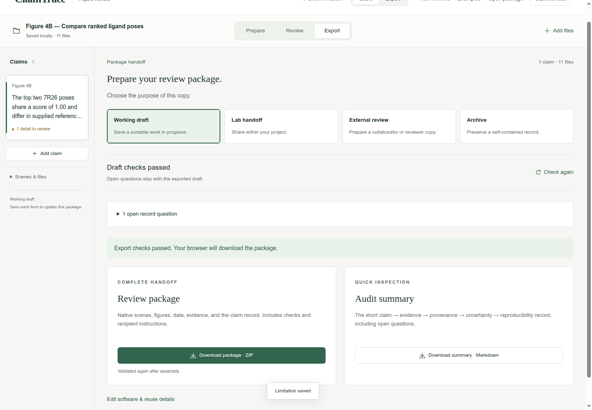

Browse the guide
Start hereAll 12 casesDescribe molecular views
Figure 1B1Pocket visibilityFigure 1B5Local to global contextFigure 1B6Preserve an alternate AP5 interaction viewCheck contacts and distances
Figure 1B2Contacts across viewsFigure 4ADocument conserved pocket-water selectionFigure 4CCheck short ligand contactsFigure 4DRecord an Asp110-ligand distanceCompare models and ensembles
Figure 1B3Confidence and geometryFigure 1B4AP5 conformational clustersFigure 4BCompare ranked ligand posesReview trajectories
Figure 4ETrace interaction state changesFigure 4FCompare trajectory repeatsShare and continue
Open a review packageCompare ranked ligand poses
Compare five displayed poses and trace their scores and reference RMSDs to the supplied table.
Extract the input ZIP first. The files folder contains the 11 files to select in ClaimTrace; LAB_NOTES.txt contains the example observations.
View the 11 input files
- case02_pose_evidence_augmented.csv
- case02_real_gnina_pose_ensemble_7r26.pml
- case02_real_gnina_pose_ensemble_7r26.png
- case02_real_gnina_pose_ensemble_7r26.png.metadata.json
- case02_real_gnina_pose_ensemble_7r26.pse
- protein.pdbqt
- rank1_score1.00.sdf
- rank2_score1.00.sdf
- rank3_score0.91.sdf
- rank4_score0.85.sdf
- rank5_score0.82.sdf
- 1. Import the case files
- 2. Write the figure statement
- 3. Record the source-script view
- 4. Choose the evidence and source files
- 5. Record the result and analysis settings
- 6. State the interpretation limit
- 7. Read the five-part claim audit
- 8. Check the working draft
- 9. Download the review package
Import the case files
Extract the input ZIP and read LAB_NOTES.txt beside the files/ folder. In ClaimTrace, click Choose files on the welcome page, or Start with files in an open package. Select all 11 files inside files/. Enter the package name below and click Create package.
| Package name | Figure 4B — Compare ranked ligand poses |
|---|
Check: Saved locally · 11 files appears, and the figure is displayed.

Write the figure statement
Click Add claim. Enter the statement and figure label, choose Model comparison, then click Save claim. Model comparison fits the comparison of scores and supplied reference RMSDs across poses.
| Figure statement | The top two 7R26 poses share a score of 1.00 and differ in supplied reference RMSD: 4.5683 angstrom for rank 1 and 0.3736 angstrom for rank 2. |
|---|---|
| Figure label | Figure 4B |
| Statement type | Model comparison |
Check: The statement appears in the claim list and above the figure.

Record the source-script view
Click Edit view details. Copy the camera instructions and visibility descriptions below, then click Save details. These values describe the supplied PML commands; the original viewer supplies the replay check.
| Saved view or camera context | Source PML: orient all_poses; zoom all_poses or pocket, 6.0; clip slab, 22. Viewer replay remains pending. |
|---|---|
| Why is all hidden? | The script starts with hide everything, then shows the receptor context, pocket surface, pocket sticks, and five ranked poses. |
| Why is elem H excluded? | Hydrogen atoms are removed before the displayed heavy-atom pose comparison. |
| Why is pocket and elem H hidden? | Pocket hydrogen sticks are hidden; the view emphasizes the ligand poses and heavy-atom pocket context. |
Check: View recorded appears beside the scene.

Choose the evidence and source files
Click Add evidence. Choose Comparison or validation report. Check the source files listed below. Scroll within Source files when needed.
| Evidence type | Comparison or validation report |
|---|---|
| Source files | case02_pose_evidence_augmented.csv
rank1_score1.00.sdf
rank2_score1.00.sdf
rank3_score0.91.sdf
rank4_score0.85.sdf
rank5_score0.82.sdf
protein.pdbqt |
Check: Source files shows 7 selected.


Record the result and analysis settings
Enter the check name and its numerical result. Open Analysis settings and enter the recorded thresholds. Click Save evidence.
| How was it checked? | Review the 7R26 rows in the pose-evidence table alongside the five saved poses. |
|---|---|
| What did you find? | The supplied 7R26 table gives ranks 1 and 2 a score of 1.00, with reference RMSDs of 4.5683 and 0.3736 angstrom. Its contact and pocket-coverage columns add separate geometric criteria. |
| Selections, cutoffs and sampling | Complex: 7R26; displayed ranks: 1-5. Contact cutoff: 4.5 angstrom; polar-contact cutoff: 3.5 angstrom; close-contact screen: 2.2 angstrom; supplied reference-RMSD threshold: 2 angstrom. |
Check: The page confirms Evidence saved, and Evidence & sources shows 1 record.

State the interpretation limit
Click Add limitation. Keep Write your own selected, enter the limitation below, then click Save limitation.
| What limits this conclusion? | The reference RMSDs are supplied benchmark results. Independent RMSD calculation requires the reference ligand. Select the 7R26 rows; the same CSV also contains 8AQJ. |
|---|
Check: Limitation saved appears, and the uncertainty entry is linked to the claim.

Read the five-part claim audit
Click Review. Read Claim, Visual evidence, Provenance, Uncertainty and Reproducibility. Compare the numerical values and scope with your source notes.
Check: Claim, Visual evidence, Provenance, Uncertainty and Reproducibility read Recorded. Reproducibility also states Replay pending.

Check the working draft
Click Export. Keep Working draft selected. Expand the open record questions to see the remaining work.
| Purpose | Working draft |
|---|
Check: Draft checks passed; 1 open record question: What do the visual cues mean?

Download the review package
Click Download package · ZIP. Check your browser’s downloads for claimtrace-review.zip, then save it with your figure. The ZIP contains the source files, claim record and recipient instructions.
Check: The page confirms: Export checks passed. Your browser will download the package.

Your saved result
One Figure 4B claim with 7 linked evidence files and one recorded limitation, exported as a Working draft ZIP.